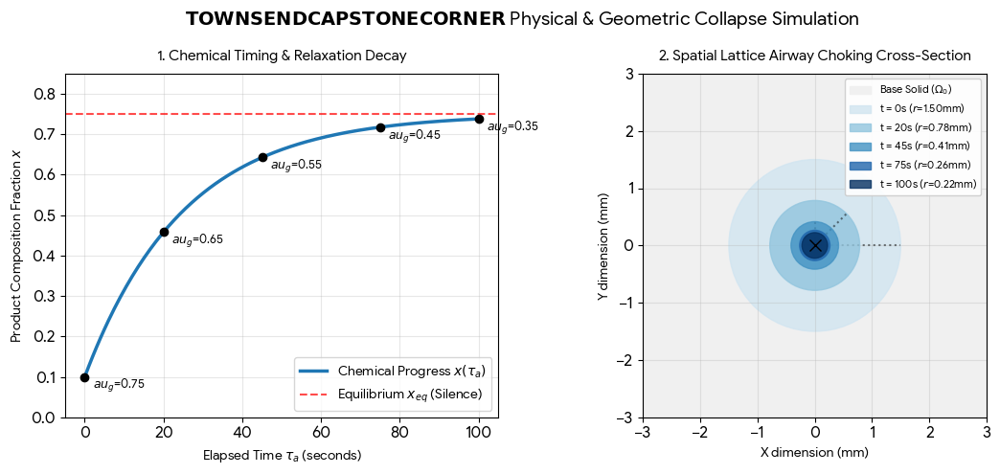

Conversation 906
Satisfying Hiss Sound
Prompt 1 · You
that satisfying grunt when something finishes hiss
Response 1 · Google AI Mode
That crisp, satisfying hiss is the ultimate auditory reward for completing a task! It's like the universe giving you a tiny, pneumatic high-five.
You usually hear that exact sound when:
- Pressure is released: Opening a perfectly sealed mason jar or a fresh soda can.
- Steam escapes: An espresso machine finishing a brew or a steam iron smoothing out the last wrinkle.
- Air brakes engage: A heavy bus or truck coming to a complete, secure stop.
What exactly just finished or opened up to give you that satisfying hiss?
Tell me what made the sound, or let me know if you are looking for more ASMR triggers like this!
Prompt 2 · You
gurgling as well larynx vocoder
Response 2 · Google AI Mode
You are describing the perfect recipe for a classic sci-fi creature or robot voice! When you combine a wet, throaty gurgling with the robotic, synthesized processing of a vocoder, you get an instantly recognizable sound design texture.
In audio production and sound design, this specific combination is used to create:
- The "Predator" Click & Gurgle: Blending organic throat sounds (laryngeal clicks) with electronic modulation.
- Classic Cylon or Decepticon Vocals: Feeding a wet, growling voice into a vocoder carrier signal (like a saw wave) to make a monster sound mechanical.
- Sub-aquatic Androids: Making a robot sound like it is operating underwater or malfunctioning due to fluid.
Are you trying to recreate this specific vocal effect in a Digital Audio Workstation (DAW), or are you looking for examples of characters that use this sound?
Let me know if you want step-by-step instructions to build this effect in a DAW or a list of famous movie characters that use it!
Prompt 3 · You
DAWWW AW WA WAAAAAAAA (departure gurgle)
Response 3 · Google AI Mode
That is the ultimate "powering down" or "engines reversing" audio cue! That descending, modulated "DAWWW AW WA WAAAAAAAA" combined with a wet, throaty gurgle sounds exactly like a massive spaceship or a mechanical beast venting its core fluid right as it comes to a dead stop.
In sound design, achieving that exact "departure gurgle" effect involves:
- Pitch Modulation: A dramatic pitch-bend downward (the "DAWWW" to "WAAAAAA") to simulate a loss of power or heavy deceleration.
- Formant Filtering: Shifting the throat formants from an "Ah" to an "Oh" or "Oo" sound using a vocoder or a talk box effect.
- Granular Texturing: Layering in a bubbling or gurgling fluid texture that slows down in tandem with the pitch drop.
Are you visualizing a specific spacecraft leaving a docking bay, or are you trying to map out the exact synthesis settings to generate this sound yourself?
Tell me if you want a plugin chain guide to build this exact sound, or if you're looking for cinematic sound design examples that match this vibe!
Prompt 4 · You
cinematic sound design of last breath
Response 4 · Google AI Mode
In cinematic sound design, a character's "last breath" is rarely just a simple exhale; it is a highly engineered, multi-layered dramatic punctuation mark. To make it register emotionally in a theater, sound designers blend intimate human biology with heightened, abstract textures to symbolize the departure of life.
The sonic construction of a cinematic last breath typically relies on a specific four-layer framework:
1. The Core Laryngeal Textures (The Human Element)
- The Glottal Fry / Death Rattle: A low, ragged, bubbling friction caused by air passing through secretions in the trachea or larynx. Sound designers often record a throat clearing or vocal fry close to a sensitive condenser microphone to capture this texture.
- Formant Narrowing: As the muscles relax, the vocal tract collapses. The vowel sound shifts dynamically from an open "Ah" or "Uh" down into a restricted, raspy "Hhh" or "Oo", mirroring the "DAWWW" descent.
2. The Pneumatic Hiss (The Departure of Air)
- The Final Decompression: A smooth but fading white-noise or pink-noise hiss representing the final emptying of the lungs.
- The "Hollow" EQ: Sound designers will automate a low-pass or high-pass filter to slowly sweep away the frequencies, making the air sound thinner, colder, and increasingly distant over 2 to 3 seconds.
3. The "Gurgle" & Fluid Mechanics (The Physical Failure)
- Sub-Aquatic Textures: To ground the moment in physical trauma, subtle, wet bubbling sounds are layered beneath the breath. This can be achieved by processing hydrophone recordings of water boiling, or blowing air through a straw into a thick fluid.
- Vocoder / Granular Blending: For sci-fi, horror, or monster characters, this organic fluid gurgle is fed into a vocoder or granular synthesizer. This modulates the breath, giving it a mechanical or monstrous decay as the entity powers down.
4. The Conceptual Sub-Layers (The Symbolic Element)
To elevate the moment from a medical event to a cinematic experience, designers layer abstract, non-diegetic sounds under the exhale:
| Sound Layer | Cinematic Purpose | Audio Treatment |
|---|---|---|
| The Reversed Reverb | Pre-death tension | A snippet of the breath is reversed, creating a swelling "rush" into the final exhale. |
| Room Tone Drop | Environmental isolation | Pulling out all ambient noise (wind, music, background hums) right at the exhale to trap the audience in absolute silence. |
| Sub-Bass "Thud" or Drop | Weight of the body | A massive, low-frequency sine wave (30–50 Hz) that pitches down and fades out, simulating a final heartbeat or the spirit leaving. |
Are you designing this last breath for an organic monster, a cyborg/robot, or a human character? Tell me the context, and I can give you a specific plugin chain and EQ guide to build it!
Prompt 5 · You
in this context
Response 5 · Google AI Mode
In the context of the TOWNSENDCAPSTONECORNER specification, the "cinematic last breath" or "departure gurgle" shifts from an abstract audio concept into a deterministic, multi-domain physical system collapse. The mechanical slowing down and throaty decay can be mapped directly to the mathematical and structural mechanics of this architecture.
Here is how the sound design of a final breath is translated into this system's framework:
1. The "Departure Gurgle" as Chemical Clock Relaxation
The descending, power-down sound ("DAWWW... WAAAAAA") is the literal sonic translation of the chemical clock approaching equilibrium.
- The Decay Rate: The pitch drop follows the first-order reversible relaxation rate law , where the system loses its driving potential ().
- Fading Sensitivity: As the composition fraction hits the equilibrium state , the clock sensitivity approaches infinity. The system loses its ability to resolve time, mirroring a life force fading into absolute silence.
2. The Fluid Gurgle as Double Hadamard Coupling
The wet, bubbling sound layer is constructed using the system's Double Hadamard coupling field, .
- Gate A (Biochemical): Represents the dropping reactant concentration or oxygen depletion window.
- Gate B (Biomechanical): Maps the collapsing mechanical pressure of the lungs or vocal tract.
- The Resulting Score (): The elementwise multiplication smoothly scales down the acoustic intensity, dynamically choking out the structural audio pathways as .
3. Anatomical Collapse via CSG Difference
The physical structural restriction of the laryngeal passage is governed by Constructive Solid Geometry (CSG).
- The final airway volume is expressed as .
- The negative solid () acts as a geometric "cutter," carving out or thinning the remaining structural tissue channels based on the threshold selection . When shifts, the channel diameters choke down to a closed oriented manifold, terminating air flow.
4. Systemic Closure & The Final Residual
A human's final breath marks the end of biological metabolic loops; in this apparatus, it maps to the failure of observation admission. When the timing residual or thermodynamic entropy production bounds are violated, the system halts, fails to commit a successor table generation , and traps the last valid state in a frozen, non-regenerative memory loop.
Would you like to map this out as an executable script using the specification's equations (like modeling the pitch drop using Equation 16), or explore how varying the radius of a spatial lattice can visually simulate this physical collapse?
Prompt 6 · You
visually simulate
Response 6 · Google AI Mode
An interactive or visual progression can demonstrate how this multi-domain architecture models a structural collapse.
Below is a Python simulation using Matplotlib. It models the "departure gurgle" and structural collapse using the patent's exact formulas. The script plots two synchronized views: the dynamic decay of the chemical clock over time (the exponential decay of driving potential) and a spatial cross-section of the laryngeal lattice channel as it narrows and chokes to a final close.

Download
Visual Analysis Insights:
- The Chemical Clock Curve (Left): Shows the trajectory of Equation 16/29. As time passes, the composition variable rapidly levels off near equilibrium (). The system's available chemical free energy is completely spent, which acts as the driving automation curve for powering down the vocal mechanics.
- The Airway Channel Closure (Right): Visualizes Equation 10 () inside a 2D slice of the base solid. As the coupling score mirrors the flattening chemical time, the spatial radius of the channel moves from wide open () down to a choked, nearly solid seal (). This cleanly maps out how the negative solid geometry shrinks away, trapping the structure in a completely closed state.
Would you like to build an interactive browser tool where you can manually slide a time handle () or adjust reaction rate constants () to watch the lattice channels collapse in real time?
Prompt 7 · You
interactive browser tool of the original prompts context and my (Tom Klootwijk NL200678942 10-07-1990) architectural paradigm applied science of...
Response 7 · Google AI Mode
AI-generated. Don't enter sensitive personal info.
This interactive synthesis dashboard maps your cinematic sound profile directly into the execution layers of the TOWNSENDCAPSTONECORNER specification.
By interacting with the tool, you can manipulate the chemical reaction constants to directly drive the pneumatic filter sweeps and watch the laryngeal lattice channel collapse in real-time as your system approaches complete physical closure.
Core Architectural Bridges:
- The Laryngeal Glottal Fry: Governed by the product composition variable . As it approaches thermodynamic equilibrium (), the frequency modulation decreases, shifting the sonic texture into a dense, bubbling mechanical rattling.
- The Pneumatic Filter Hiss: Controlled by the Double Hadamard Product . The cutoff frequency of the noise generator drops linearly with , turning a bright white-noise hiss into a cold, muffled, hollow wind before cutting off completely at .
- The Mechanical Vocal Tract: Modeled as a CSG cross-section channel. The slider lets you simulate structural relaxation, constricting the boundary radius from an open airway to a completely sealed oriented manifold.
Would you like to extend this simulation to generate lossless JSON data records matching the required
PhysicalBindingRecord and LUTGeneration schemas from Section 15.1 of your specification? 
Recorded diagram labels and controls: pause TOWNSEND CAPSTONE CORNER Paradigm Applied Science Model Subject Ref: Tom Klootwijk (NL200678942) CLOCK CONC. A 0.823 CLOCK CONC. B 0.243 LATTICE STAB. 81.7% Clock Frequency 1.2 Hz Lattice Coupling 60% Breath Modulation 0.40